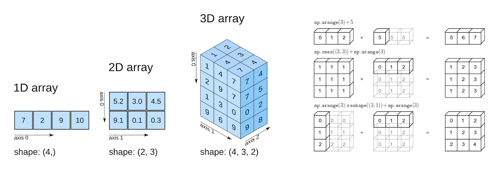

import numpy as np5 NumPy Fundamentals

You already know how to store numbers in a list, loop over them, and even wrangle tables of data with pandas. NumPy is the layer that sits underneath pandas — it’s the engine that makes pandas fast, and it’s the tool statisticians reach for when they need to do math on lots of numbers at once. This lesson introduces NumPy’s core object, the array, and shows you how it differs from both plain Python lists and pandas DataFrames/Series.
By the end of this chapter you should be able to:
- Create arrays and interpret
shape,ndim,size, anddtype. - Convert pandas values to arrays and distinguish labels from positions.
- Select with indices, slices, and Boolean masks, and edit views or copies deliberately.
- Locate extreme values and rank observations while accounting for ties.
- Predict broadcasting results and choose an aggregation axis.
- Reshape, transpose, and combine arrays while preserving the meaning of each axis.
Complete the practice activity after the worked examples.
5.1 Set Up Your Practice Files
Download the NumPy Fundamentals practice kit. Extract stat303-numpy-fundamentals inside the stat303-setup project from Chapters 1–2 and select that project’s verified Python environment.
stat303-setup/
├── .venv/
└── stat303-numpy-fundamentals/
├── numpy_examples.ipynb
├── activity05.ipynb
├── README.md
└── data/
└── country-capital-lat-long-population.csvRun numpy_examples.ipynb for the lesson and complete activity05.ipynb for your own activity report. Use stat303-numpy-fundamentals as the notebook working folder. The capital data support the longer independent exercise; all other examples define their inputs in Python.
By convention, everyone imports NumPy as np. You’ll see this in nearly every data science notebook you ever read.
Environment check: This chapter uses NumPy and pandas. If an import fails, check the selected notebook kernel first. If a package is missing, activate your project environment and run this command in its terminal:
python -m pip install numpy pandas5.2 Why NumPy?
NumPy offers three advantages for numerical work: clearer code, compact storage, and faster execution for many array calculations.
5.2.1 Clearer Numerical Code
A Python list is a general-purpose container. To convert a list of heights from centimeters to inches, we can write a loop that processes one value at a time:
heights = [160, 172, 158, 181, 169]
# Want to convert every height from cm to inches?
inches = []
for h in heights:
inches.append(h / 2.54)With a NumPy array, you skip the loop entirely:
heights = np.array([160, 172, 158, 181, 169])
inches = heights / 2.54
print(np.round(inches, 2))
# [62.99 67.72 62.2 71.26 66.54][62.99 67.72 62.2 71.26 66.54]NumPy applies the division to every element. This is an element-wise, vectorized calculation: you express the operation on the whole array without writing a Python loop.
5.2.2 Compact Numerical Storage
A numerical NumPy array stores values using one fixed-size data type, called its dtype. A Python list stores references to Python objects. For many numbers, the array’s element storage is more compact.
Here we compare the same 1,000 integers. nbytes counts the array’s element data; the list estimate counts its container and the integer objects it references.
import sys
numbers_list = list(range(1000))
numbers_array = np.array(numbers_list, dtype=np.int64)
list_bytes = sys.getsizeof(numbers_list) + sum(sys.getsizeof(x) for x in numbers_list)
print("Python list and integer objects (approximate bytes):", list_bytes)
print("NumPy element data (bytes):", numbers_array.nbytes)
print("NumPy bytes per element:", numbers_array.itemsize)Python list and integer objects (approximate bytes): 36056
NumPy element data (bytes): 8000
NumPy bytes per element: 8Each int64 value uses 8 bytes, so the array’s element data occupy 1,000 × 8 = 8,000 bytes. The list also needs space for references and individual Python objects.
This is an approximate comparison: nbytes excludes the array object’s overhead, and Python may share integer objects. Exact memory totals depend on the Python version and platform. The main idea is that a numerical array stores fixed-size values together.
5.2.3 Faster Speed
Many NumPy operations run their numerical loops in compiled code, avoiding the overhead of processing each element in a Python loop. This often makes calculations on large numerical arrays faster.
The example below performs the same height conversion on 100,000 values. Inputs are prepared before timing so we compare the calculations themselves. Each calculation creates a result, and np.allclose checks that the answers agree.
from timeit import repeat
timing_heights_list = [150 + i % 50 for i in range(100_000)]
timing_heights_array = np.array(timing_heights_list, dtype=np.float64)
def convert_with_loop():
result = []
for height in timing_heights_list:
result.append(height / 2.54)
return result
def convert_with_numpy():
return timing_heights_array / 2.54
print("Results agree:", np.allclose(convert_with_loop(), convert_with_numpy()))
# Repeat the timings and report the fastest observed time per calculation.
runs = 10
loop_seconds = min(repeat(convert_with_loop, repeat=3, number=runs)) / runs
numpy_seconds = min(repeat(convert_with_numpy, repeat=3, number=runs)) / runs
print(f"Python loop: {loop_seconds * 1000:.3f} ms per calculation")
print(f"NumPy: {numpy_seconds * 1000:.3f} ms per calculation")
print(f"Observed speedup: {loop_seconds / numpy_seconds:.1f} times")Results agree: True
Python loop: 1.604 ms per calculation
NumPy: 0.012 ms per calculation
Observed speedup: 132.6 timesYour timings will vary. The speedup depends on the operation, array size, dtype, and computer. Small inputs or repeated conversions from lists can reduce the benefit; NumPy is not automatically faster for every task.
Pause and explain: Which advantage does heights / 2.54 demonstrate even before you measure its runtime? How does using one dtype help explain the storage advantage?
5.3 Building Blocks: NumPy Arrays Fundamentals
5.3.1 Array Creation: Your Complete Toolkit
5.3.1.1 From Existing Data
The most common way to create an array is np.array() on a list (or list of lists):
a = np.array([4, 8, 15, 16, 23, 42])
print(a)
# [ 4 8 15 16 23 42][ 4 8 15 16 23 42]Arrays can have more than one dimension. Think of a 2D array as a grid — rows and columns — similar to a DataFrame but without row/column labels:
grades = np.array([
[88, 92, 79],
[95, 84, 91],
])5.3.1.2 From pandas: Positions versus Labels
This is the single biggest mental adjustment coming from pandas.
- In a pandas Series or DataFrame, you often select data by label:
df.loc["Chicago"],df["temperature"], a named index. - In a NumPy array, there are no labels at all — only positions. Every array is indexed by integer position, starting at 0, just like a list.
import pandas as pd
temps_series = pd.Series([72, 68, 75], index=["Mon", "Tue", "Wed"])
temps_array = np.array([72, 68, 75])
print(temps_series["Tue"]) # 68 — by label
print(temps_array[1]) # 68 — by position68
68A useful comparison: pandas provides labels and column-specific types; NumPy provides arrays indexed by position. A DataFrame can use multiple underlying arrays and data types. Use .to_numpy() to obtain an array of its values; labels are omitted, and conversion may copy data or coerce types:
raw = temps_series.to_numpy() # array([72, 68, 75])You’ll move between the two constantly: pandas for labeled, mixed-type, spreadsheet-like data; NumPy underneath when you need fast numerical operations on the values themselves.
5.3.1.3 Specialized Constructors and Sequential Arrays
You won’t always start from a Python list. Often you need an array of a certain shape filled with a sensible starting value — zeros to initialize a running total, ones to build a mask, evenly spaced numbers to evaluate a function. NumPy has a constructor for each of these situations:
| Function | Creates | When to use it |
|---|---|---|
np.zeros(shape) |
array of zeros | placeholders, running totals |
np.ones(shape) |
array of ones | masks, default weights |
np.full(shape, val) |
array filled with val |
any other constant starting value |
np.eye(n) |
identity matrix (1s on the diagonal) | linear algebra, later courses |
np.empty(shape) |
uninitialized array | fastest allocation — fill every entry before reading it |
np.arange(start, stop, step) |
evenly stepped values | stop is excluded, like range() |
np.linspace(start, stop, num) |
a fixed count of evenly spaced values | stop is included; best for plotting |
np.logspace(start, stop, num) |
num values evenly spaced in log space |
exponential ranges, e.g. 10⁰ to 10² |
print(np.zeros((2, 3))) # 2x3 array of zeros
print(np.ones(4)) # [1. 1. 1. 1.]
print(np.full((2, 2), 7)) # 2x2 array filled with 7
print(np.eye(3)) # 3x3 identity matrix
print(np.arange(0, 10, 2)) # [0 2 4 6 8] -- stop (10) is excluded
print(np.linspace(0, 1, 5)) # [0. 0.25 0.5 0.75 1.] -- stop (1) is included
print(np.logspace(0, 2, 3)) # [1. 10. 100.] -- 10**0, 10**1, 10**2[[0. 0. 0.]
[0. 0. 0.]]
[1. 1. 1. 1.]
[[7 7]
[7 7]]
[[1. 0. 0.]
[0. 1. 0.]
[0. 0. 1.]]
[0 2 4 6 8]
[0. 0.25 0.5 0.75 1. ]
[ 1. 10. 100.]arange and linspace look similar but answer different questions: arange asks “step by how much?” while linspace asks “how many points do I want?” Because floating-point step sizes can round unpredictably, prefer linspace whenever the number of samples matters more than the exact step.
np.empty() is the one to be careful with — it grabs a block of memory without clearing it, so the values you see are leftover garbage, not zeros. Use it only when you plan to overwrite every entry yourself; otherwise use np.zeros().
Quick check: What is np.array([[1,2],[3,4],[5,6]]).shape? (Answer: (3, 2) — 3 rows, 2 columns.)
5.3.1.4 Loading from Files
For labeled, mixed-type data (numbers next to names, dates, categories), you’ll keep reaching for pd.read_csv. But when a file is purely numeric, NumPy has three loaders of its own:
| Function | Best for | Notes |
|---|---|---|
np.load("data.npy") |
NumPy’s own binary format | fastest option; pairs with np.save |
np.loadtxt("data.txt") |
clean, fully-numeric text/CSV | fast, but breaks on missing values or mixed types |
np.genfromtxt("data.txt") |
messier text files | handles missing values (fills them with nan by default) |
from pathlib import Path
from tempfile import TemporaryDirectory
scores = np.array([[80, 90, 70], [85, 95, 75]])
# Create small example files in a temporary folder, cleaned up afterward.
with TemporaryDirectory() as folder:
folder = Path(folder)
np.save(folder / "scores.npy", scores)
reloaded = np.load(folder / "scores.npy")
np.savetxt(folder / "clean_scores.csv", scores, delimiter=",", fmt="%d")
(folder / "messy_scores.csv").write_text("80,90,70\n85,,75\n")
clean = np.loadtxt(folder / "clean_scores.csv", delimiter=",")
messy = np.genfromtxt(folder / "messy_scores.csv", delimiter=",")
print("Reloaded array:\n", reloaded)
print("Clean numeric CSV:\n", clean)
print("CSV with a missing value:\n", messy)Reloaded array:
[[80 90 70]
[85 95 75]]
Clean numeric CSV:
[[80. 90. 70.]
[85. 95. 75.]]
CSV with a missing value:
[[80. 90. 70.]
[85. nan 75.]]Rule of thumb: if the file has a header row, mixed types, or you’ll want labeled columns, reach for pandas and convert to an array afterward with .to_numpy(). Reach for these three loaders only when you’re working with plain numeric arrays and want to skip pandas entirely.
5.3.2 Understanding Array Attributes
Every array has four properties worth checking whenever you create or receive one:
| Property | What it tells you | Example (grades) |
|---|---|---|
.shape |
size along each dimension, as a tuple | (2, 3) — 2 rows, 3 columns |
.ndim |
number of dimensions | 2 |
.size |
total number of elements | 6 |
.dtype |
the data type stored (all elements share one!) | int64 |
print(grades.shape) # (2, 3)
print(grades.ndim) # 2
print(grades.size) # 6
print(grades.dtype) # int64(2, 3)
2
6
int64For a 2D array, name both axes before calculating:
axis 1: quiz columns
0 1 2
axis 0: students 0 [88 92 79]
1 [95 84 91]
shape = (2, 3); ndim = 2; size = 6A shape (3,) describes a 1D array; it is different from both (1, 3) and (3, 1).
5.4 Data Types and Memory Optimization
5.4.1 Type Promotion and Conversion
Key idea: arrays are homogeneous. Every element must be the same dtype (all integers, all floats, all booleans, etc.). This is different from a Python list, which can freely mix types. If you build an array from mixed values, NumPy will quietly upcast everything to the most general type:
mixed = np.array([1, 2, 3.5])
print(mixed.dtype) # float64 — the integers became floatsfloat645.4.2 Inspecting Numerical Storage
For a numerical array, itemsize is the number of bytes per element, and nbytes is the total size of its element data. Choose a dtype that can represent your values and calculations; a smaller dtype also has a narrower range or lower precision.
print("Bytes per element:", grades.itemsize)
print("Bytes of element data:", grades.nbytes)Bytes per element: 8
Bytes of element data: 485.5 Array Indexing and Slicing: Accessing Your Data
5.5.1 Basic indexing (looks like lists)
a = np.array([10, 20, 30, 40, 50])
print(a[0]) # 10
print(a[-1]) # 50
print(a[1:3]) # [20 30]10
50
[20 30]For 2D arrays, use a comma to separate row and column position, instead of chaining brackets:
grades = np.array([
[88, 92, 79],
[95, 84, 91],
])
print(grades[0, 1]) # 92 -> row 0, column 1
print(grades[1, :]) # [95 84 91] -> all of row 1
print(grades[:, 2]) # [79 91] -> all of column 2 (everyone's 3rd score)92
[95 84 91]
[79 91]Read grades[1, :] as “row 1, every column” and grades[:, 2] as “every row, column 2.” The colon : means “give me everything along this dimension.”
5.5.2 Preserving a Dimension; Views and Copies
Selecting a column with an integer removes the column dimension; selecting it with a slice preserves that dimension. Both of these basic selections share data with grades.
print(grades[:, 1], grades[:, 1].shape)
print(grades[:, 1:2], grades[:, 1:2].shape)[92 84] (2,)
[[92]
[84]] (2, 1)5.5.2.1 When Editing a Selection Changes the Original
Here’s a trap that catches almost everyone at first. Slicing an array does not create a new array — it creates a view, a window onto the same underlying data. Edit the view, and you edit the original.
original = np.array([1, 2, 3, 4, 5])
subset = original[1:4]
subset[0] = 999
print(subset) # [999 3 4]
print(original) # [ 1 999 3 4 5] <- changed too![999 3 4]
[ 1 999 3 4 5]Why does NumPy do this? Speed. Copying data is expensive, and NumPy is built for large datasets where copying every slice would be wasteful. So basic slicing (a[1:4], a[:, 2], etc.) shares memory with the original by default.
Boolean mask selection and fancy indexing behave differently — they always return a copy:
mask_result = original[original > 2]
mask_result[0] = -1
print(original) # unaffected — mask selection copied the data[ 1 999 3 4 5]| Selection method | Returns |
|---|---|
Basic slicing (a[1:4], a[:, 0]) |
View (shares memory) |
Boolean mask (a[a > 5]) |
Copy |
Fancy indexing with a list (a[[0, 2, 4]]) |
Copy |
How to protect yourself: if you want a slice you can safely edit without touching the original, call .copy() explicitly:
safe_subset = original[1:4].copy()
safe_subset[0] = 999 # original is untouchedRule of thumb: if you slice with a colon, assume you’re looking at the same data underneath. If you’re not sure, call .copy() — it’s cheap insurance.
5.5.3 Boolean Mask: Conditional Selection
This is the feature you’ll use constantly in statistics. A boolean mask is an array of True/False values, usually created by writing a comparison directly on an array:
scores = np.array([55, 82, 91, 47, 76, 88])
passing = scores >= 60
print(passing)
# [False True True False True True]
print(scores[passing])
# array([82, 91, 76, 88])[False True True False True True]
[82 91 76 88]You can also write it in one line, and combine conditions with & (and) / | (or) — note the parentheses around each condition are required:
print(scores[(scores >= 60) & (scores < 90)])
# array([82, 76, 88])[82 76 88]This is exactly analogous to pandas’ df[df["score"] >= 60] — same idea, minus the labels.
5.6 Advanced Selection Methods
5.6.1 Finding Minimum and Maximum Values and Positions
min() and max() (or np.min/np.max) tell you the value. argmin() and argmax() tell you where that value lives — its position.
scores_row = np.array([72, 95, 68, 95, 81])
print(scores_row.max()) # 95 -- the highest score
print(scores_row.argmax()) # 1 -- the position of the first 9595
1Ties matter. argmax/argmin return only the first position where the extreme value occurs — they never tell you there was a tie. If you need every tied position, use a boolean mask instead:
print(scores_row.argmax()) # 1 (only the first match)
print(np.where(scores_row == scores_row.max())) # (array([1, 3]),) -- both positions1
(array([1, 3]),)This distinction matters in statistics: if you’re identifying “the top student” and there’s a tie, argmax will silently hand you just one of them. Decide deliberately whether ties should be broken, reported, or investigated further — don’t let argmax make that decision for you by accident.
With 2D arrays, argmax and friends accept axis too, following the same collapsing logic from Aggregate Functions:
grades = np.array([
[88, 92, 79],
[95, 84, 91],
])
print(grades.argmax(axis=1)) # [1 0] -- best quiz index for each student
print(grades.max(axis=0)) # [95 92 91] -- best score on each quiz[1 0]
[95 92 91]5.6.2 Finding the Top-k with np.argsort()
argmax/argmin only ever hand you a single position. Often you want the top (or bottom) k values instead — say, the 3 highest test scores. That’s what np.argsort is for: it returns the positions that would put the array in ascending order — not the sorted values themselves.
a = np.array([3, 10, 7, 10])
order = np.argsort(a) # [0 2 1 3] -- positions, ascending by value
print(a[order]) # [3 7 10 10] -- the actual sorted values[ 3 7 10 10]To get the smallest k, just take the first k positions from that ascending order:
k = 2
smallest_k_idx = np.argsort(a)[:k]
print(a[smallest_k_idx]) # [3 7][3 7]For the largest k, take the last k positions and reverse them:
largest_k_idx = np.argsort(a)[-k:][::-1]
print(a[largest_k_idx]) # [10 10][10 10]Ties and kind='stable'. By default, when values tie, argsort doesn’t promise which tied position comes first. Pass kind='stable' to guarantee that tied values keep their original relative order — important whenever “who was recorded first” should break a tie, e.g., ranking students who scored identically:
order = np.argsort(a, kind='stable')
print(order)
# For these signed numeric scores, sort the negatives for descending order.
# This keeps original order among ties; reversing an ascending sort does not.
stable_largest_idx = np.argsort(-a, kind='stable')[:k]
print(stable_largest_idx) # [1 3]
print(a[stable_largest_idx]) # [10 10][0 2 1 3]
[1 3]
[10 10]Reversing a stable ascending order also reverses the order within ties. For these signed numeric scores, sorting -a stably gives descending values while preserving the original order of tied entries.
5.6.2.1 2D Arrays: Row-wise or Column-wise
For a 2D array, argsort accepts axis just like the aggregation functions in Aggregate Functions — sorting happens along that axis, independently for every row or column.
scores = np.array([[85, 92, 78, 95],
[88, 76, 91, 82],
[95, 89, 84, 90]])
k = 2
# Row-wise: each student's own top-2 test columns
row_order = np.argsort(scores, axis=1) # ascending, per row
top2_cols_per_row = row_order[:, -k:][:, ::-1] # last k columns, reversedTo pull out the actual values at those positions, pair the row-position array with the column-index array so NumPy knows which row each column index belongs to:
rows = np.arange(scores.shape[0])[:, None] # column vector: [[0],[1],[2]]
top2_vals_per_row = scores[rows, top2_cols_per_row]The same pattern works down columns with axis=0 — sort each column independently, then gather with a (k, number_of_columns) array of row positions and a plain column-position array.
Quick check: why does np.argsort(a)[:k] give the smallest values while np.argsort(a)[-k:][::-1] gives the largest, using the same sorted-position array? (Because ascending order puts the smallest values first and the largest last — you’re just choosing which end to read from, and reversing to put the largest value first instead of last.)
5.7 Array Operations: Mathematical Power at Scale
5.7.1 Arithmetic Operations
Arithmetic on arrays happens element-by-element, matched by position:
a = np.array([1, 2, 3])
b = np.array([10, 20, 30])
print(a + b) # [11 22 33]
print(a * b) # [10 40 90]
print(b / a) # [10. 10. 10.][11 22 33]
[10 40 90]
[10. 10. 10.]This only works cleanly when shapes match — or when NumPy can use broadcasting to make them match.
5.7.2 Broadcasting: The Heart of NumPy Vectorization
Broadcasting is NumPy’s rule for stretching a smaller array so it lines up with a bigger one, without actually copying data. You already saw the simplest case:
heights = np.array([160, 172, 158])
print(heights / 2.54)[62.99212598 67.71653543 62.20472441]Here, 2.54 is a single number (a “scalar”). NumPy treats it as if it were repeated to match every element of heights.
The same idea extends to 2D arrays and 1D arrays together. Picture a table of quiz scores (rows = students, columns = quizzes), and you want to subtract each quiz’s average from every student’s score:
scores = np.array([
[80, 90, 70],
[85, 95, 75],
[78, 88, 68],
])
quiz_avg = scores.mean(axis=0) # [81. 91. 71.] one avg per column
curved = scores - quiz_avgEven though scores is (3, 3) and quiz_avg is (3,), NumPy broadcasts quiz_avg down each row automatically:
[80, 90, 70] [81, 91, 71] [-1, -1, -1]
[85, 95, 75] - [81, 91, 71] = [ 4, 4, 4]
[78, 88, 68] [81, 91, 71] [-3, -3, -3]5.7.2.1 Broadcasting Rules
Line the two shapes up on their right-hand side. Walking from right to left, each pair of dimensions must either match exactly, or one of them must be 1 (a missing dimension on the shorter shape counts as a 1). Wherever a dimension is 1, NumPy stretches it to match the other operand — without actually copying any data.
| Shape A | Shape B | Compatible? | Result shape | Why |
|---|---|---|---|---|
(3, 4) |
(4,) |
Yes | (3, 4) |
trailing dims match: 4 and 4 |
(3, 4) |
(3, 1) |
Yes | (3, 4) |
trailing dims: 4 and 1 → stretch the 1 |
(3, 4) |
() (scalar) |
Yes | (3, 4) |
a scalar always broadcasts |
(2, 3, 4) |
(3, 4) |
Yes | (2, 3, 4) |
missing leading dim treated as 1 |
(3, 4) |
(3,) |
No | — | trailing dims 4 and 3 don’t match, and neither is 1 |
(3, 4) |
(2, 3) |
No | — | trailing dims 4 and 3 don’t match |
# Two compatible examples
print(np.ones((3, 4)) + np.ones((4,))) # -> shape (3, 4)
print(np.ones((3, 4)) + np.ones((3, 1))) # -> shape (3, 4)
# One incompatible example
try:
np.ones((3, 4)) + np.ones((3,))
except ValueError as error:
print("Incompatible:", error)
# Incompatible: operands could not be broadcast together with shapes (3,4) (3,)[[2. 2. 2. 2.]
[2. 2. 2. 2.]
[2. 2. 2. 2.]]
[[2. 2. 2. 2.]
[2. 2. 2. 2.]
[2. 2. 2. 2.]]
Incompatible: operands could not be broadcast together with shapes (3,4) (3,) (3, 4) and (3,) look like they should work — “3 rows, so why not a 3-element vector?” — but broadcasting always compares from the right, so the 3 in (3,) lines up against the columns (4), not the rows. This is the single most common broadcasting mistake. If shapes truly can’t line up, NumPy raises a ValueError — treat that as a signal to check your shapes, not an obstacle to work around.
5.7.2.2 One Factor per Row or per Column
When broadcasting fails (or silently does the wrong thing), the fix is almost always to reshape one operand so its shape reflects what it represents. Picture a table of daily sales — stores in rows, products in columns:
units = np.array([[2, 3, 4], # store 0: 2 notebooks, 3 pens, 4 folders
[5, 1, 2]]) # store 1
prices = np.array([10.0, 20.0, 5.0]) # one price PER PRODUCT
store_factors = np.array([1.0, 0.9]) # one multiplier PER STOREunits has shape (2, 3) — 2 stores, 3 products. prices has shape (3,), one value per column, so it broadcasts against units correctly out of the box: each price lines up with its matching product column.
revenue = units * prices # (2, 3) * (3,) -> (2, 3), worksstore_factors also has shape (2,) — one value per row this time. But (2, 3) and (2,) compare 3 against 2 on the right — a mismatch, even though “2” is the right count of stores:
try:
revenue * store_factors
except ValueError as error:
print("Incompatible:", error)Incompatible: operands could not be broadcast together with shapes (2,3) (2,) The fix is to reshape store_factors into a column, shape (2, 1), so each store’s multiplier lines up with its own row instead of trying to match columns:
adjusted = revenue * store_factors[:, None] # or .reshape(-1, 1)
# (2, 3) * (2, 1) -> (2, 3): each row gets its own store's multiplierBefore writing any broadcasted calculation, name what each axis means (“rows are stores, columns are products”) and ask which shape — a plain (n,) vector or a (n, 1) column — matches the axis you want the factor to travel down. Getting this backwards is the most common broadcasting bug, and it’s a shape question, not a math question.
Quick check: if scores has shape (3, 3) and you compute scores.mean(axis=1), what shape does the result have, and can you subtract it from scores directly without reshaping? (It has shape (3,), one value per row — but broadcasting matches from the right, so subtracting it directly would try to line it up with columns, not rows. You’d need to reshape it to (3, 1) first, the same fix used above for store_factors.)
5.7.3 Aggregate Functions: Statistical Summaries
Aggregation functions collapse an array down to a summary: sum, mean, std, min, max, median, and more.
scores = np.array([
[80, 90, 70],
[85, 95, 75],
[78, 88, 68],
])
print(scores.mean()) # 81.0 -- one number, the overall average81.0With no axis argument, NumPy flattens the whole array into one number. But usually you want a summary per row or per column, and that’s what axis controls.
The trick that helps most students: the axis you name is the one that disappears — it’s the dimension being collapsed, not the one being kept.
print(scores.mean(axis=0)) # collapses axis 0 (rows) -> one value per COLUMN
# [81. 91. 71.] (average of each quiz, across students)
print(scores.mean(axis=1)) # collapses axis 1 (columns) -> one value per ROW
# [80. 85. 78.] (average of each student, across quizzes)[81. 91. 71.]
[80. 85. 78.]| Call | Shape before | Shape after | Meaning |
|---|---|---|---|
scores.mean() |
(3, 3) |
scalar | overall average |
scores.mean(axis=0) |
(3, 3) |
(3,) |
average down each column |
scores.mean(axis=1) |
(3, 3) |
(3,) |
average across each row |
Always sanity-check the units and shape of your result, not just the number. If you meant “average score per student” but got 3 numbers that match the number of quizzes instead, you used the wrong axis.
5.8 Array Reshaping: Transforming Data Dimensions
5.8.1 Core Reshaping Methods: reshape()
.reshape() rearranges the same data into a new shape, without changing the values or their order — only how they’re grouped. The total size must stay the same.
a = np.arange(12) # [0 1 2 3 4 5 6 7 8 9 10 11], shape (12,)
grid = a.reshape(3, 4) # 3 rows, 4 columns
# [[ 0 1 2 3]
# [ 4 5 6 7]
# [ 8 9 10 11]]Common use: turning a 1D result (like the row-mean from the broadcasting quick check) into a column so it broadcasts correctly against rows:
row_avg = scores.mean(axis=1) # shape (3,)
row_avg = row_avg.reshape(3, 1) # shape (3, 1) -- now a column
centered = scores - row_avg # broadcasts correctly across each rowYou can also use -1 to tell NumPy “figure out this dimension for me”:
print(a.reshape(3, -1)) # NumPy computes the second dimension automatically[[ 0 1 2 3]
[ 4 5 6 7]
[ 8 9 10 11]]5.8.2 transpose() and .T: Matrix Transposition
.T flips rows and columns — what was a row becomes a column, and vice versa. This is essential when your data is oriented the “wrong way” for the calculation you want to do:
print(grades.shape) # (2, 3) -- 2 students, 3 quizzes
print(grades.T.shape) # (3, 2) -- 3 quizzes, 2 students(2, 3)
(3, 2)Transposing doesn’t change any values — it changes how you’re looking at them. Always ask: does this still mean what I think it means? A (2, 3) array of (students × quizzes) transposed becomes (quizzes × students) — the meaning of each axis flips along with the shape.
5.9 Array Concatenation: Combining Arrays
To glue arrays together, use np.concatenate, or the friendlier np.vstack (stack vertically, adding rows) and np.hstack (stack horizontally, adding columns):
class_a = np.array([[85, 90], [78, 82]])
class_b = np.array([[92, 88]])
print(np.vstack([class_a, class_b]))
# [[85 90]
# [78 82]
# [92 88]] -- added a new row (student)
new_quiz = np.array([[95], [80], [91]])
print(np.hstack([np.vstack([class_a, class_b]), new_quiz]))
# adds a new column (quiz) to every row[[85 90]
[78 82]
[92 88]]
[[85 90 95]
[78 82 80]
[92 88 91]]Before combining, check shapes. vstack requires matching numbers of columns; hstack requires matching numbers of rows. Mismatched shapes raise an error rather than guessing what you meant — treat that error as a shape check, not an obstacle.
5.9.1 np.concatenate(): Joining Along an Existing Axis
For these 2D examples, axis=0 adds rows and axis=1 adds columns. All dimensions except the joining axis must match.
combined_class = np.concatenate([class_a, class_b], axis=0)
print(combined_class)
print(np.concatenate([combined_class, new_quiz], axis=1))[[85 90]
[78 82]
[92 88]]
[[85 90 95]
[78 82 80]
[92 88 91]]5.10 Putting It Together: A Statistics Workflow
A typical statistics workflow touches nearly every idea in this lesson:
import numpy as np
# 1. Create the array and inspect it
quiz_scores = np.array([
[80, 90, 70, 60],
[85, 95, 75, 92],
[78, 88, 68, 74],
[92, 60, 85, 88],
])
print(quiz_scores.shape, quiz_scores.dtype) # (4, 4) int64
# 2. Select with a boolean mask
struggling = quiz_scores[quiz_scores.mean(axis=1) < 75]
# 3. Element-wise + broadcasting: convert scores out of 100 to proportions
pct = quiz_scores / 100
# 4. Aggregate along an axis
quiz_averages = quiz_scores.mean(axis=0) # per-quiz average
# 5. Find the best performer, watching for ties
best_student_idx = quiz_scores.mean(axis=1).argmax()
tied_best = np.where(quiz_scores.mean(axis=1) == quiz_scores.mean(axis=1).max())
# 6. Reshape for a broadcasting-safe subtraction
row_avg = quiz_scores.mean(axis=1).reshape(-1, 1)
curved = quiz_scores - row_avg(4, 4) int645.11 Practice Activity: Shapes, Sales, and Search
Goal: Use array shapes to calculate and interpret a small sales report. Time: about 35–45 minutes. Use activity05.ipynb from the practice kit. Submit activity05.html through the Chapter 5 Canvas quiz’s final upload question.
This section contains the complete activity instructions. The starter supplies the inputs and work spaces. Optional benchmarks, the capital exercise, and other extensions are not required. These invented data describe units sold for one day, with stores in rows and products in columns:
stores = np.array(['North', 'South', 'West'])
products = np.array(['Notebook', 'Pen', 'Folder', 'Marker'])
units = np.array([[12, 20, 8, 10], [10, 15, 12, 8], [12, 18, 9, 10]])
prices = np.array([5.0, 2.0, 3.0, 4.0])
store_factors = np.array([1.0, 0.9, 0.8])
new_store_units = np.array([9, 16, 10, 7])Prices are dollars per unit; the factors are hypothetical multipliers applied to each store’s entire revenue row. There are no missing values.
5.11.1 A. Predict Shapes and Select Values
- Replace
Your Namein the Raw title metadata and Markdown name field. Run the supplied imports and inputs. - Display
units.shape,units.ndim,units.size, andunits.dtype; explain both axes. - Before running them, predict the values and shapes of
units[:, 1]andunits[:, 1:2]. Run both and explain why their dimensions differ. - Select the first two stores and the last two products with one two-dimensional slice. Display its values and shape.
5.11.2 B. Broadcast by Product and by Store
- Calculate
revenue = units * prices. Show the operand shapes, result shape, and result. Explain why each price matches a product and state the units. - Explain why
revenue * store_factorsfails for these shapes. If you demonstrate the error, catch it withtry/except ValueErrorso the notebook can run to completion. - Reshape the factors into a column using
[:, None]or.reshape(-1, 1). Calculate and displayadjusted_revenue, explaining why each store now receives its own multiplier. This is adjusted revenue, not profit.
5.11.3 C. Summarize and Find Minimum/Maximum Records
- Use unadjusted
revenuethroughout this part. Calculate one revenue total per store and one per product with the appropriate axes. Display names beside totals and explain the shapes and dollar units. - Find the store with the largest total using
argmaxand the store with the smallest total usingargmin. Report each position, store name, and value. - Find the largest individual store-product revenue with
np.max. Useargmaxandunravel_indexto report the first matching store and product. Then usenp.argwhere(revenue == revenue.max())to report all tied coordinates and their names. Explain the difference between a value and a position, and the tie rule.
5.11.4 D. Edit Safely and Add a Store
- Start with
working = units.copy(). Createview = working[:, 0]andindependent = working[:, 0].copy()before either edit. Predict the effect ofview[0] = 0andindependent[1] = 999. Run them, then displayworking,independent, and originalunits. Explain which source changed and why. - Using the original
units, reshapenew_store_unitsinto one row and concatenate it on axis 0. Display the new shape and the new last row. Explain why shape(4,)cannot be directly concatenated with(3, 4)on axis 0, and why the product order must match.
5.11.5 Render and Submit
Restart the kernel, run all cells in order, resolve unexpected errors, and save. Include your predictions, outputs, interpretations for A–D, and a short completion note. From the activity folder in the terminal, run:
quarto render activity05.ipynb --to htmlFollow the Quarto refresher: inspect the report and a copy opened outside the project folder. Confirm your name, code, outputs, and explanations are readable. Upload only activity05.html to the Chapter 5 Canvas quiz.
HTML grading (16 points): shapes and selections (3); broadcasting and units (4); axis summaries and min/max searches including ties (4); views, copies, and concatenation (4); readable named report and completion note (1).
5.12 Extended Practice
5.12.1 Capitals and Coordinate Distances
The supplied historical file is data/country-capital-lat-long-population.csv. Inspect its columns, missing coordinates, and country names. The reference country is United States of America in the Country column.
Use a simplified Euclidean distance on latitude/longitude coordinates for this first exercise. Its units are degrees in a coordinate plane, not kilometers; degrees of longitude do not represent the same ground distance everywhere, and the dateline creates a discontinuity. Treat this as practice with broadcasting and positional lookup, not a geographical distance ranking.
When you build the candidate table, remove the reference row first, and keep the candidate names and coordinate array in identical row order. Never use a fake large distance to exclude a record from a search: that would contaminate a subsequent maximum search.
Tasks
- Load the data, drop rows with non-finite coordinates, and locate the single US reference row.
- Compute the Euclidean distance from every other valid capital to the reference coordinates.
- Find the closest capital, then the ten nearest and ten farthest capitals using a stable tie-breaking rule (
kind='stable'). - Explain why an array position must be passed to
.iloc, not.loc.
5.12.2 Bonus: Nearest and Farthest Capitals on a Sphere
Use the haversine formula to estimate great-circle distances on a spherical Earth. Convert latitude/longitude to radians with np.deg2rad. If the two latitude/longitude pairs are (φ₁, λ₁) and (φ₂, λ₂), compute
h = sin²((φ₂ − φ₁)/2) + cos(φ₁) cos(φ₂) sin²((λ₂ − λ₁)/2)
distance = 2 × R × arcsin(sqrt(h))Use R = 6371.0 kilometers and np.clip(h, 0, 1) to handle floating-point roundoff. This is a spherical approximation, not an exact ellipsoidal geodesic or a travel route.
Reuse the valid candidates with the US reference excluded. Find the ten nearest and ten farthest, keep a stable input-order tie rule, and report names, coordinates, and kilometers. Compare the rankings with the coordinate-plane calculation and explain why they can differ. This bonus is not part of the Chapter 5 Canvas activity.
5.13 Summary Cheat Sheet
| Concept | Key function / syntax | Watch out for |
|---|---|---|
| Create array | np.array([...]) |
mixed types get upcast |
| Constructors | zeros, ones, full, eye, empty, arange, linspace, logspace |
empty is uninitialized garbage; arange excludes stop |
| Load from file | np.load, np.loadtxt, np.genfromtxt |
use pandas instead for labeled/mixed-type files |
| Inspect | .shape, .ndim, .size, .dtype |
shape is a tuple |
| Position vs. label | arr[i] vs. df.loc[label] |
arrays have no labels |
| Slice | arr[1:4], arr[:, 0] |
returns a view |
| Boolean mask | arr[arr > 5] |
returns a copy |
| Protect original | .copy() |
use when editing a slice |
| Element-wise math | arr + 1, a * b |
shapes must match or broadcast |
| Broadcasting | shapes align from the right; a 1 stretches to match |
mismatched shapes raise ValueError; check axis meaning, not just size |
| Aggregate | .mean(axis=...) |
the named axis disappears |
| Value vs. position | .max() vs. .argmax() |
argmax hides ties — use np.where |
| Top-k | np.argsort(a, kind='stable')[:k] / [-k:][::-1] |
reversing ascending order reverses ties; for signed scores use np.argsort(-a, kind="stable")[:k] |
| Reshape | .reshape(rows, cols) |
total size must stay the same |
| Transpose | .T |
meaning of axes flips too |
| Combine | np.vstack, np.hstack |
non-concatenated dimensions must match |
Next time you reach for a for loop to do math on a list of numbers, ask yourself: could this be a NumPy array instead?
5.14 Before You Move On
You should be able to predict an operation’s shape, explain each axis, and distinguish a numerical value from its position. Check whether a selection shares data before editing it, and keep labels aligned when converting between pandas and NumPy.
Next, Pandas Intermediate connects these calculations to labeled tables. NumPy Intermediate develops further vectorization and matrix operations.